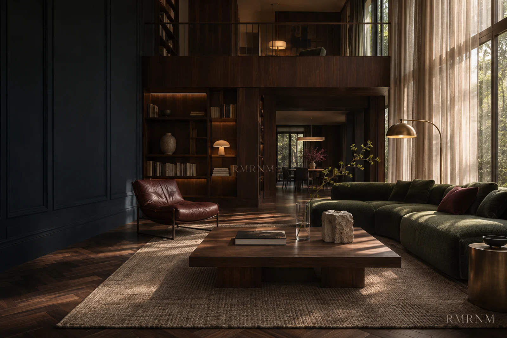
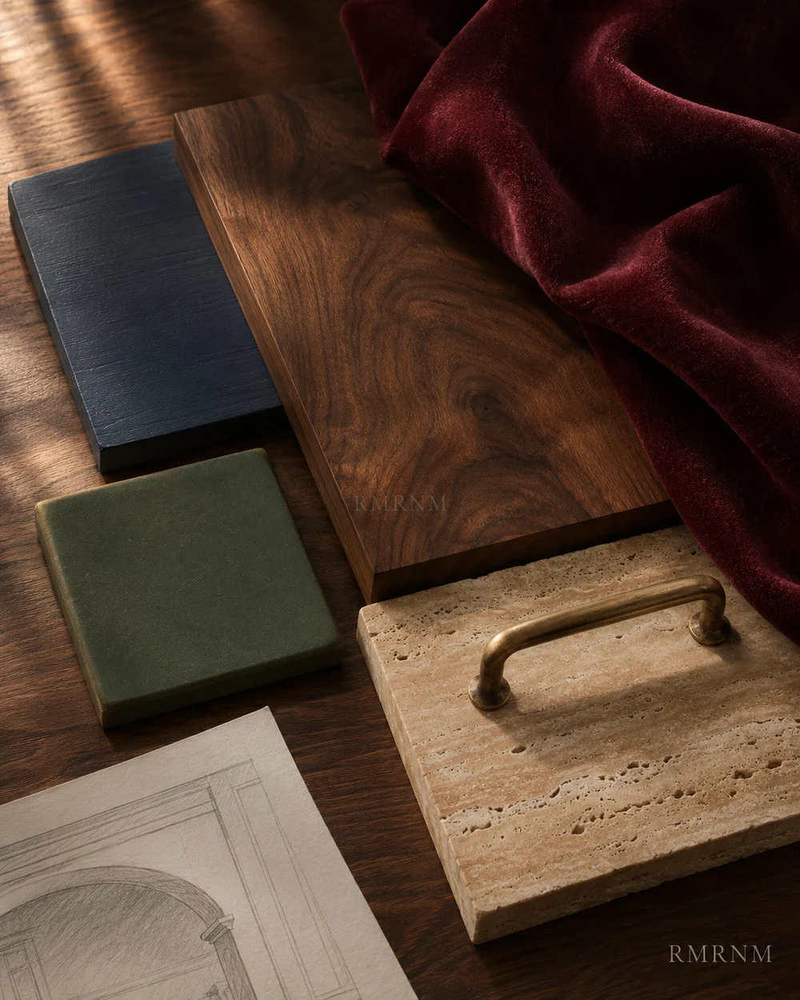

Тихая глубина
84 м² · Орех, синий, мягкий свет

Частные интерьеры с характером
Глубокие оттенки. Живые материалы.
Пространство, в котором можно быть собой.
Философия «Слоя»
Дом складывается из того, как вы живёте. Из медленных завтраков, любимых книг, света по вечерам. Мы начинаем с этих деталей, чтобы интерьер стал продолжением человека.
Слой за слоем: удобная планировка, натуральные фактуры, глубокий цвет. Красота, у которой есть смысл.
Найти своё настроениеАвторские концепции RMRNM
84 м² · Орех, синий, мягкий свет
96 м² · Бордо, лён, латунь
158 м² · Зелень, камень, дерево
Интерьеры созданы для портфолио и показывают визуальные концепции, а не реализованные объекты.
Какое настроение ближе вам?
Примерьте палитру к своему пространству.
Синий задаёт спокойный ритм. Орех добавляет тепла, а светлый текстиль оставляет пространство для воздуха.

Красота, которую можно почувствовать
Узнаваемое пространство создают не случайные предметы, а отношения между ними. Холодный камень рядом с тёплым деревом. Гладкая стена рядом с бархатной тканью.
От первого эскиза до целого пространства
Для тех, кому нужен точный образ будущего дома и понятное направление для следующих решений.
Когда важно связать эстетическую идею с техническими решениями и подготовиться к реализации.
Дополнительная работа, которую обычно согласуют отдельно после утверждения проекта.
Хороший интерьер начинается с вопросов.
Так мы превращаем образ жизни в проект.
Обсуждаем привычки, пожелания и ограничения. Собираем референсы и задачи.
Находим удобное расположение комнат, хранения и повседневных маршрутов.
Соединяем цвет, свет и материалы. Проверяем, как детали работают вместе.
Оформляем решения в выбранном формате: от концепции до комплекта чертежей.
До первого разговора
Да, концепцию можно продумать для отдельной комнаты. В брифе опишите, какое пространство вы хотите изменить и что важно сохранить.
Нет. Глубокий цвет может быть небольшим акцентом. Свет, размер помещения и ваш образ жизни определяют, сколько тёмных поверхностей будет уместно.
Да. Любимый стол, кресло или коллекция книг могут стать отправной точкой. Отметьте такие вещи в пожеланиях к проекту.
От площади, состава проекта и сложности задач. Ниже можно посмотреть иллюстрационный расчёт для двух форматов. Финальный бюджет реального проекта всегда обсуждают индивидуально.
Ваше пространство. Ваша история.
Несколько деталей помогут собрать первый бриф и понять, с чего начать.
Демонстрационные тарифы для портфолио. Это не коммерческое предложение. Стоимость ремонта и мебели не включена.